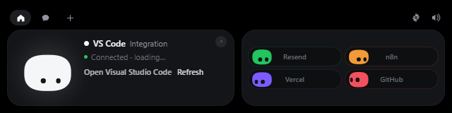

A tiny friend that lives at the top of your screen
Coucou watches your Claude Code sessions, lets you approve its requests from the island, and keeps an eye on Stripe, GitHub, Vercel, n8n and more. Free and open source.
Install on Windows or LinuxView on GitHub

Private by design. No account, no analytics, no tracking. Your keys stay in the Windows Credential Manager or the Linux Secret Service.
Read the privacy policy.
Runs on Windows 10/11 and on Linux (built and tested for Arch). Mochi lives at the top centre of the screen. The Windows installer is not published for now: Microsoft Defender wrongly flags the unsigned installer, so build it from source. On Arch, see the Linux guide.